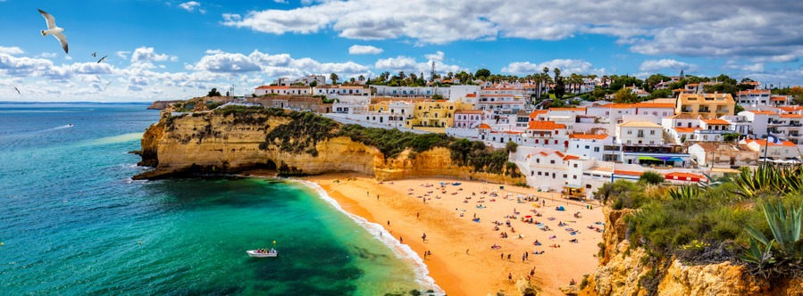

Frankreich im Westen Europas ist ein Land mit mittelalterlichen Städten, Bergdörfern und Mittelmeerstränden. Die Hauptstadt Paris gilt als erstrangiges Mode- und Kulturzentrum. Neben klassischen Kunstmuseen wie dem Louvre befinden sich hier auch Wahrzeichen wie der Eiffelturm. Das Land ist außerdem bekannt für seine Weine und die raffinierte Küche. Uralte Malereien in der Höhle von Lascaux sind Zeugnisse der reichen französischen Geschichte, ebenso wie das römische Theater in Lyon oder das prunkvolle Schloss Versailles.
Spanien
Spanien ist ein Land auf der iberischen Halbinsel in Europa und umfasst 17 autonome Regionen von großer geografischer und kultureller Vielfalt. In der Hauptstadt Madrid befinden sich der Königspalast und der Prado mit Werken europäischer Meister. In Segovia gibt es ein mittelalterliches Schloss (Alcázar) und einen intakten römischen Aquädukt. Wahrzeichen der katalanischen Hauptstadt Barcelona sind die skurrilen Bauwerke Antoni Gaudís wie die Sagrada Familia.
Italien
Italien, europäisches Land mit langer Mittelmeerküste, hat die westliche Kultur und Küche nachhaltig geprägt. In der Hauptstadt Rom befinden sich neben dem Vatikan auch imposante Kunstwerke und Ruinen antiker Bauwerke.Weitere bedeutende Städte des Landes sind Florenz, in dem Meisterwerke der Renaissance wie Michelangelos „David“ und Brunelleschis Duomo zu finden sind, Venedig, die Stadt der Kanäle, und Mailand, die Modehauptstadt Italiens.
Deutschland
So gehören die Schlösser Neuschwanstein, Schwerin und Heidelberg, die Burg Hohenzollern, die Wartburg, die Walhalla, das Obere Mittelrheintal mit seinen Burgen sowie die mittelalterlichen Altstädte von Rothenburg ob der Tauber und Rüdesheim am Rhein zu den weltweit bekannten touristischen Zielen.
Zu den wichtigsten Sehenswürdigkeiten Deutschlands, die weltweit berühmt sind, gehören das Brandenburger Tor und das Reichstagsgebäude in Berlin, Schloss Neuschwanstein und die Zugspitze im Süden und natürlich der Kölner Dom.
Portugal

Portugal ist ein südeuropäisches Land auf der Iberischen Halbinsel und grenzt an Spanien. Seine Lage am Atlantik hat viele Aspekte seiner Kultur beeinflusst: Stockfisch und gegrillte Sardinen zählen zu den Nationalgerichten, die Strände an der Algarve sind beliebte Reiseziele und ein Großteil der Architektur stammt aus dem 16. bis 19. Jahrhundert, als Portugal eine bedeutende Seemacht war.